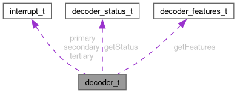

|
Speeduino
|
Loading...
Searching...
No Matches
|
Speeduino
|
This structure represents a decoder configuration. More...
#include <decoder_t.h>

Public Attributes | |
| interrupt_t | primary |
| The primary interrupt configuration - usually the crank trigger. | |
| interrupt_t | secondary |
| The secondary interrupt configuration - usually the cam trigger. | |
| interrupt_t | tertiary |
| The tertiary interrupt configuration - for decoders that use a 3rd input. E.g. VVT. | |
| using | getRPM_t = uint16_t(*)(void) |
| The function to get the RPM. | |
| getRPM_t | getRPM |
| The function to get the RPM. | |
| using | getCrankAngle_t = int16_t(*)(void) |
| The function to get the crank angle. | |
| getCrankAngle_t | getCrankAngle |
| The function to get the crank angle. | |
| using | setEndTeeth_t = void(*)(void) |
| The function to set the end teeth for ignition calculations. | |
| setEndTeeth_t | setEndTeeth |
| The function to set the end teeth for ignition calculations. | |
| using | reset_t = void(*)(void) |
| The function to reset the decoder. Called when the engine is stopped, or when the engine is started. | |
| reset_t | reset |
| The function to reset the decoder. Called when the engine is stopped, or when the engine is started. | |
| using | engine_running_t = bool(*)(uint32_t) |
| The function to test if the engine is running. | |
| engine_running_t | isEngineRunning |
| The function to test if the engine is running. | |
| using | status_fun_t = decoder_status_t(*)(void) |
| The function to get the current decoder status. | |
| status_fun_t | getStatus |
| The function to get the current decoder status. | |
| using | feature_fun_t = decoder_features_t(*)(void) |
| The function to get the current decoder feature set. | |
| feature_fun_t | getFeatures |
| The function to get the current decoder feature set. | |
This structure represents a decoder configuration.
Create using decoder_builder_t
The function to test if the engine is running.
This is based on whether or not the decoder has detected a tooth recently
| curTime | The time in µS to use for the liveness check. Typically the result of a recent call to micros() |
The function to get the current decoder feature set.
The function to get the crank angle.
| using decoder_t::getRPM_t = uint16_t(*)(void) |
The function to get the RPM.
| using decoder_t::reset_t = void(*)(void) |
The function to reset the decoder. Called when the engine is stopped, or when the engine is started.
The function to set the end teeth for ignition calculations.
The function to get the current decoder status.
| getCrankAngle_t decoder_t::getCrankAngle |
The function to get the crank angle.
| feature_fun_t decoder_t::getFeatures |
The function to get the current decoder feature set.
| getRPM_t decoder_t::getRPM |
The function to get the RPM.
| status_fun_t decoder_t::getStatus |
The function to get the current decoder status.
| engine_running_t decoder_t::isEngineRunning |
The function to test if the engine is running.
This is based on whether or not the decoder has detected a tooth recently
| curTime | The time in µS to use for the liveness check. Typically the result of a recent call to micros() |
| interrupt_t decoder_t::primary |
The primary interrupt configuration - usually the crank trigger.
| reset_t decoder_t::reset |
The function to reset the decoder. Called when the engine is stopped, or when the engine is started.
| interrupt_t decoder_t::secondary |
The secondary interrupt configuration - usually the cam trigger.
| setEndTeeth_t decoder_t::setEndTeeth |
The function to set the end teeth for ignition calculations.
| interrupt_t decoder_t::tertiary |
The tertiary interrupt configuration - for decoders that use a 3rd input. E.g. VVT.